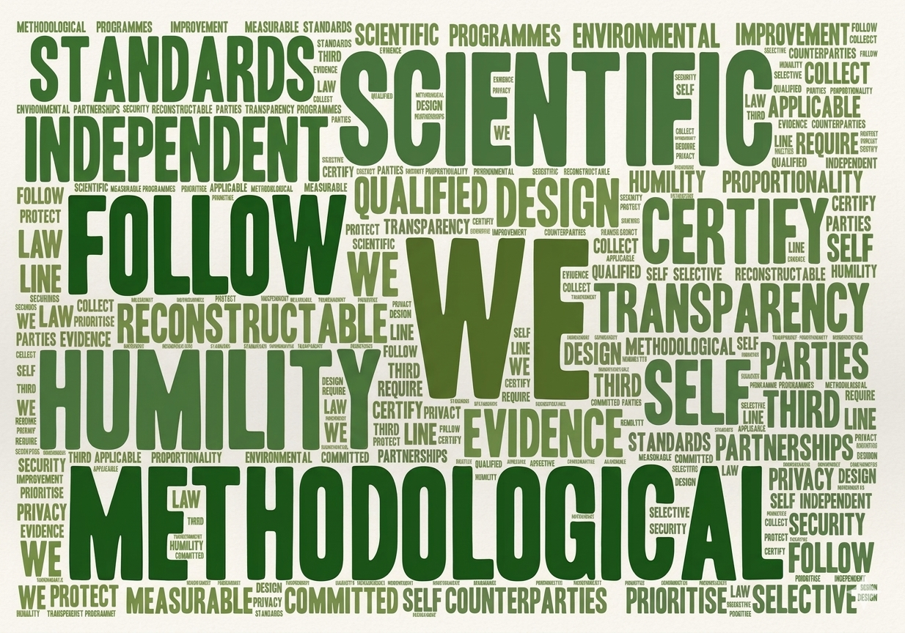

About
Environmental insight that institutions can act on
Climate and nature data only create value when decision-makers can trust it. Spruces exists as the architect of digital environmental commodities—bridging distributed clean energy in emerging markets and institutional rigour through cryptographic D-MRV, sovereign data governance, and transparent accountability.
Who we are
SPRUCES GLOBAL CARBON SOLUTIONS Pte. Ltd. is a Singapore-based company providing digital environmental commodity architecture through proprietary D-MRV protocols, cryptographic verification, and sovereign data governance. We combine domain understanding of distributed renewables in Southeast Asia with disciplined intellectual property control and third-party review—as a technology infrastructure provider and environmental sustainability consultant, not a regulated financial intermediary.
Governance & intellectual property
International environmental markets depend on clear entity accountability and control of intangible assets. Spruces maintains:
- Corporate accountability — Singapore-incorporated entity as the public contracting party
- Protocol ownership — Spruces-controlled monitoring protocols, payload schemas, and integrity-event logic (held as proprietary trade secrets and developer-owned core IP)
- Partner ecosystem — Field monitoring delivered through qualified deployment partners; Spruces retains full control of data definition and governance rules
- Reviewer access — Documented materials available to validation and verification partners under NDA where required
Our principles
- Scientific and methodological humility — We follow independent standards; we do not self-certify.
- Transparency by design — Evidence should be reconstructable by qualified third parties.
- Selective partnerships — We prioritise counterparties committed to measurable environmental improvement.
- Security and privacy proportionality — Collect only what programmes require; protect it in line with applicable law.

Ecosystem we are building toward
We are establishing relationships across cloud infrastructure, Earth-observation and field data partners, and voluntary market methodology experts. Logo displays on this site will appear only with written permission.
- Cloud hosting aligned with AWS Singapore Region practices
- Digital MRV interoperability with open guardian-style ledger tooling (roadmap)
- Methodology alignment with major voluntary standards (subject to project-level registration)
Work with us
We periodically welcome specialists in environmental markets, D-MRV data governance, and cryptographic systems engineering.